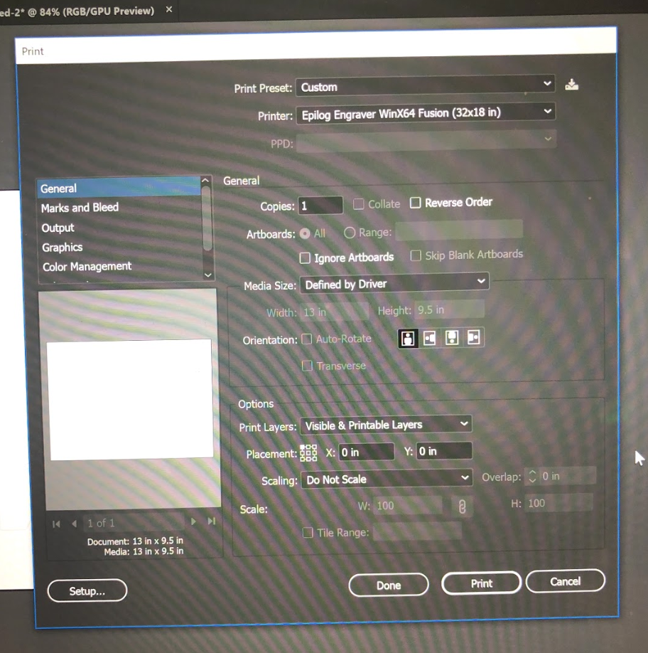
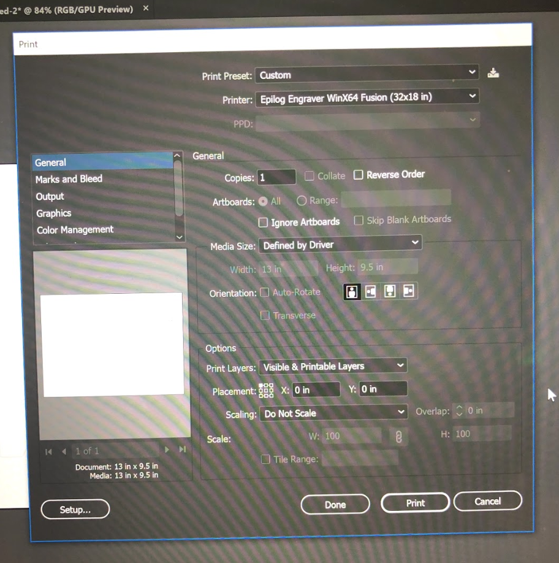

Assignment 1: Flower Construction Kit!
Laser Cut Press Fit Construction Kit
Tools: Calipers, Illustrator, laser cutting machine, scissors, cardboard (Amazon box)
Process
Ideation
For this assignment, I wanted to make a flower construction kit. First, I start sketching out different shapes for the petals, starting with a circle and then exploring other shapes to make more interesting looking petals. Eventually, I settled with a hexagon shape because I thought that it looked the most like a petal and had enough sides for connecting with other pieces.
I think this was the most challenging task of this assignment which was figuring out what I wanted the final outcome to be and the required pieces to make that happen. It really helped to sit down and just do a brainstorming session using inspiration from real-world objects that had repetitive patterns. Although my drawing skills are very mediocre, I found it helpful to at least have some kind of visual representation.

For the cut fit, I started with the thickness of my cardboard which was 2.7 mm. I did a test cut to try the fitting and see if the structure would survive a gentle jiggle. Even though the fit was fine, I was concerned that it was not snug enough in some places because the cardboard's thickness was not consistent throughout. I changed the thickness of the cut by -0.1mm each time and found that at 2.5mm the fit was snug enough. I also made the petals bigger so that it would cover more of the bulb and stand out.
For the bulb, I just cut two circles and fit them together. At first I had imagined using them more as stand but when I put it together, the petals were strong enough to hold on its own anyway. In order to find the right number of petals on each side, I just played around with different assortments until it looks more like a flower but not too busy with petals.
Other Challenges
The biggest obstacle that I encountered during this assignment was getting my file to print correctly. I kept receiving "position error" from the laser cutting machine and after consulting the staff, the solution was to unchecked the "Center Engraving" box in "preferences".
Reflection
Overall, laser cutting was really fun! I like how flexible the machine is in being able to control where to cut and this was really useful in being able make use all of the cardboard and not be wasteful. I enjoyed being able to productively recycled my delivery boxes.
Source Files

 

Kit Design
The kit has: 2 circles, 14 hexagons. The circles, together, make up the bulb part of the flower. The hexagons are petals.
Each side of the circle fits 3 pieces of the hexagon. The edge cuts are 2.5mm for a snug fit.
Other Designs
After playing around with different assortments and fit of the cutouts. I've discovered other ways that the pieces could be assembled and applied.

Can be used as a candle holder!
Or as a crown for young kids